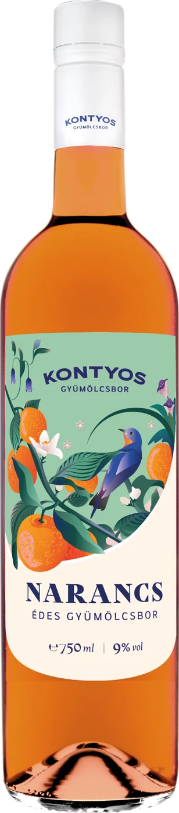

Hűtve, jéggel, nyáron.
Könnyű, gyümölcsös – teraszra, piknikre, baráti estékre.

A mai trendet követve készítettük el az új termékünket. 50%-ban narancsborból és 50%-ban almaborból, könnyen fogyasztható, mégis gazdag ízvilágú édes gyümölcsbor.
9 %vol · Édes
Könnyű, gyümölcsös – teraszra, piknikre, baráti estékre.
A mai trendet követve készítettük el az új termékünket. 50%-ban narancsborból és 50%-ban almaborból, könnyen fogyasztható, mégis gazdag ízvilágú édes gyümölcsbor.
Édes Narancs -Almabor 0,75 l:
50%-ban narancsborból és 50%-ban almaborból, modern reduktív technológiával készült,citrusos, friss narancsos ízvilágú édes gyümölcsbor.
Kötelező termékinformáció
Még nincs értékelés – légy te az első! (Élesben: értékelés a vásárlás után e-mailben.)
 Eper édes gyümölcsbor
Eper édes gyümölcsbor Málna édes gyümölcsbor
Málna édes gyümölcsbor Meggy édes gyümölcsbor
Meggy édes gyümölcsbor